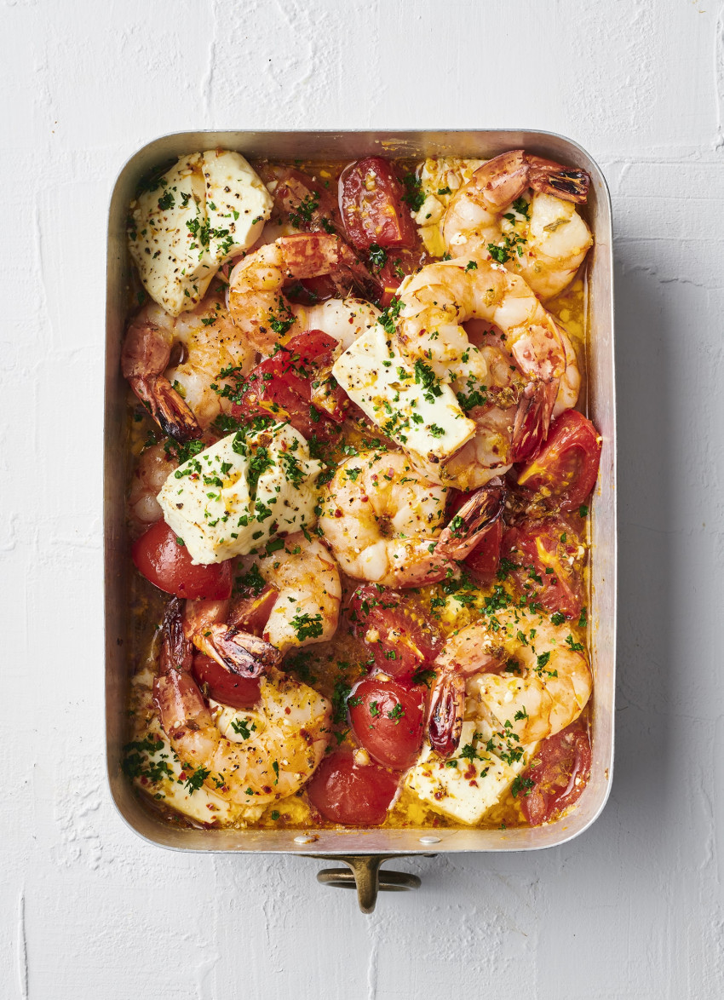

Favorite dishes
Baked Prawns with Lemon and Feta

Description:
This is the perfect dish to serve with lots of crusty bread for mopping up all the lovely garlicky, lemony juices.
Ingredients:
- 10 large raw, peeled prawns, tail on
- 2 medium vine tomatoes, roughly chopped
- zest and juice 1 lemon
- ¼ cup olive oil
- 2 cloves garlic, crushed
- pinch chilli flakes
- 1 teaspoon dried oregano, preferably Sicilian
- sea salt and ground pepper
- 125 grams firm feta cheese, broken into large pieces
Steps:
- Preheat the oven to 200°C fan bake.
- Toss the prawns with all the ingredients except the feta. Tip into a medium, shallow, ovenproof baking dish. Break the feta into large pieces and nestle into the dish. Spoon over some of the juices and a grind of pepper.
- Bake for 15 minutes, until the prawns are just cooked. Scatter over the parsley.